Solving the shallow-water / heat equation on the unit sphere with a physics-informed neural network. The Laplace–Beltrami operator, learned — no mesh, no flat grid.
Left: the closed-form analytical solution of the heat equation on the sphere. Right: a 50 305-parameter MLP that learned to satisfy the same PDE from collocation points alone. Same camera, same time window.
The difference at a glance: virtually none. Average relative L2 error 3.3 % across the full time window, peaking at 5.1 % at t=0.2 where the field has decayed to 30 % of its initial amplitude.
Finite differences and finite elements discretise space into a regular lattice or a triangulated mesh. On a sphere, that means either pole singularities (lat/lon grids) or stiffness-matrix gymnastics (cubed-sphere, geodesic grids).
The network ingests (x, y, z, t) directly on the embedded manifold. The Laplace–Beltrami operator is computed via autograd on the surface using ΔS u = Δu − n·∇(n·∇u) − n·∇u — no mesh, no pole treatment, no stencils.
The same PINN scaffolding extends to tori, ellipsoids, shells, and arbitrary triangulated manifolds. Drop in DEC operators or atlas charts; the learning objective is unchanged.
Six moments from the learned evolution of the field. The ℓ=2 spherical-harmonic initial pattern decays at rate e-6t — by t=0.2 the amplitude is 30 % of its initial value.
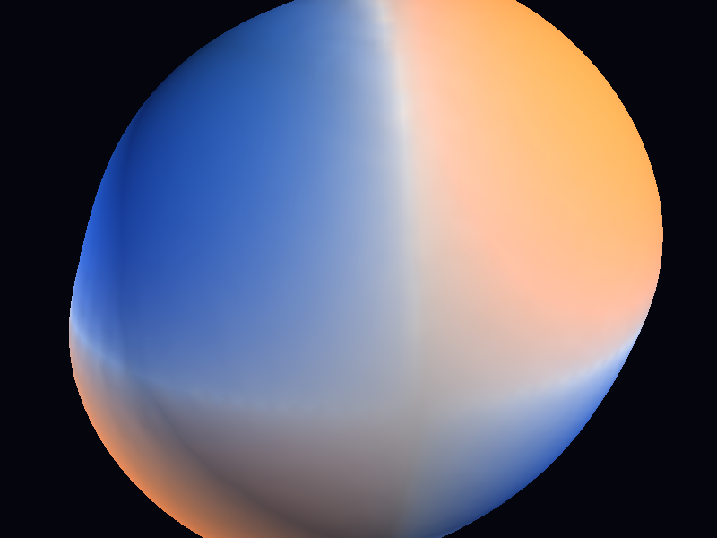
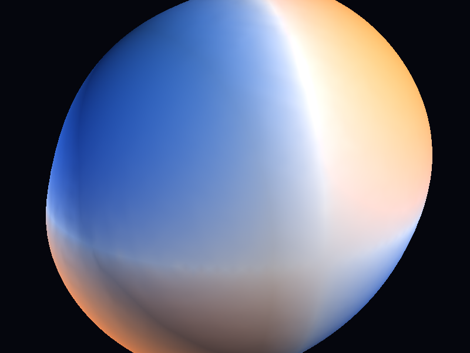
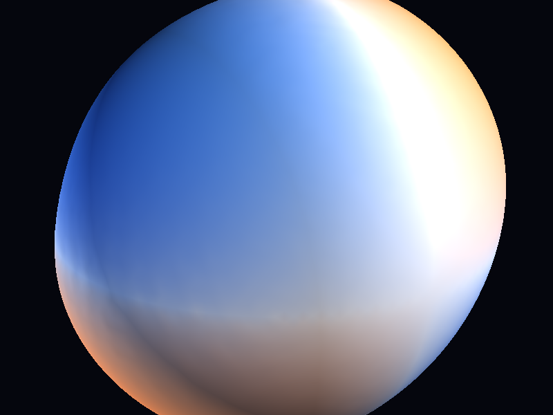
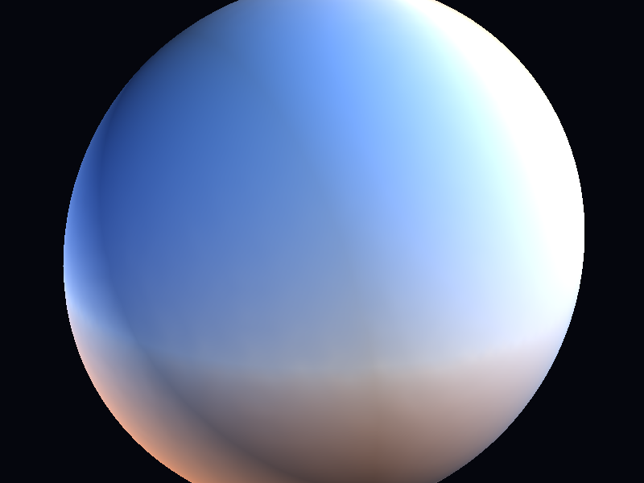
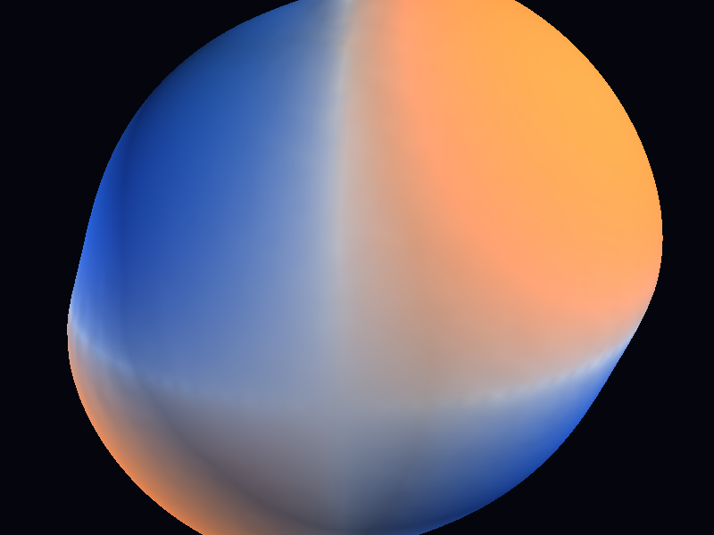
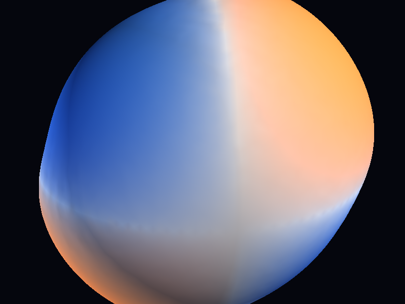
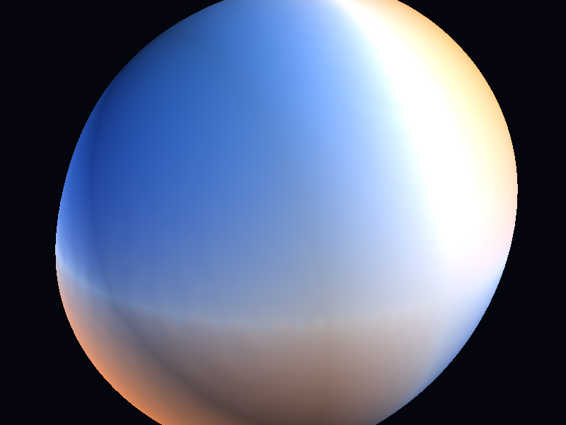
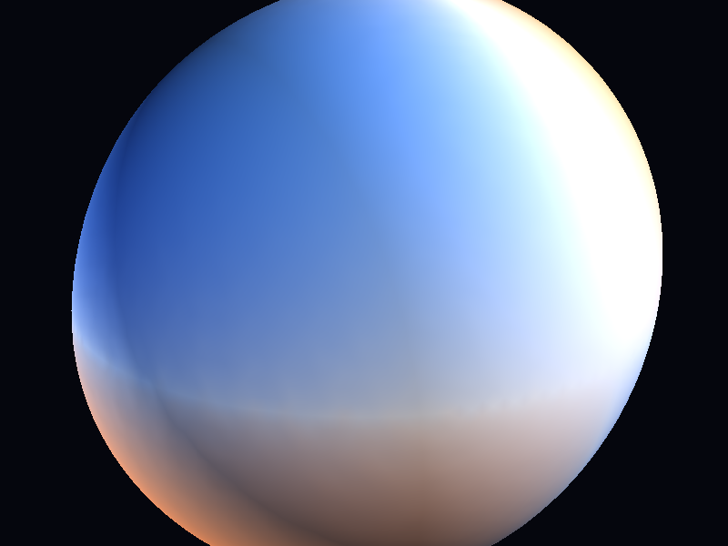
Same field, three visual languages. Toggle with [ and ] in the interactive viewer.
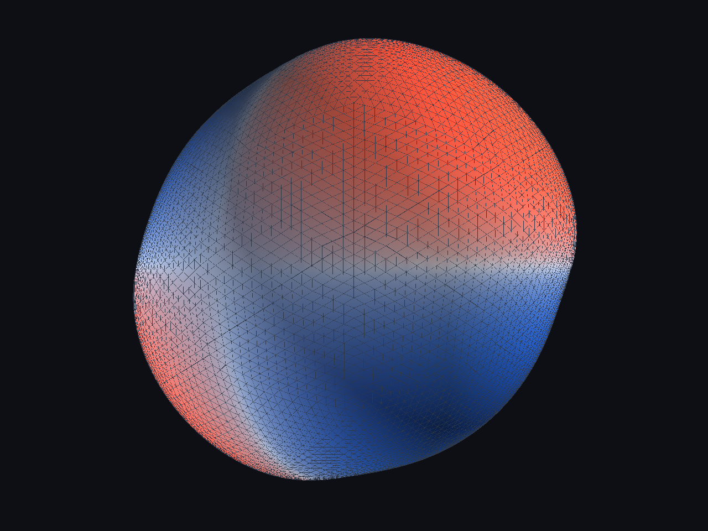
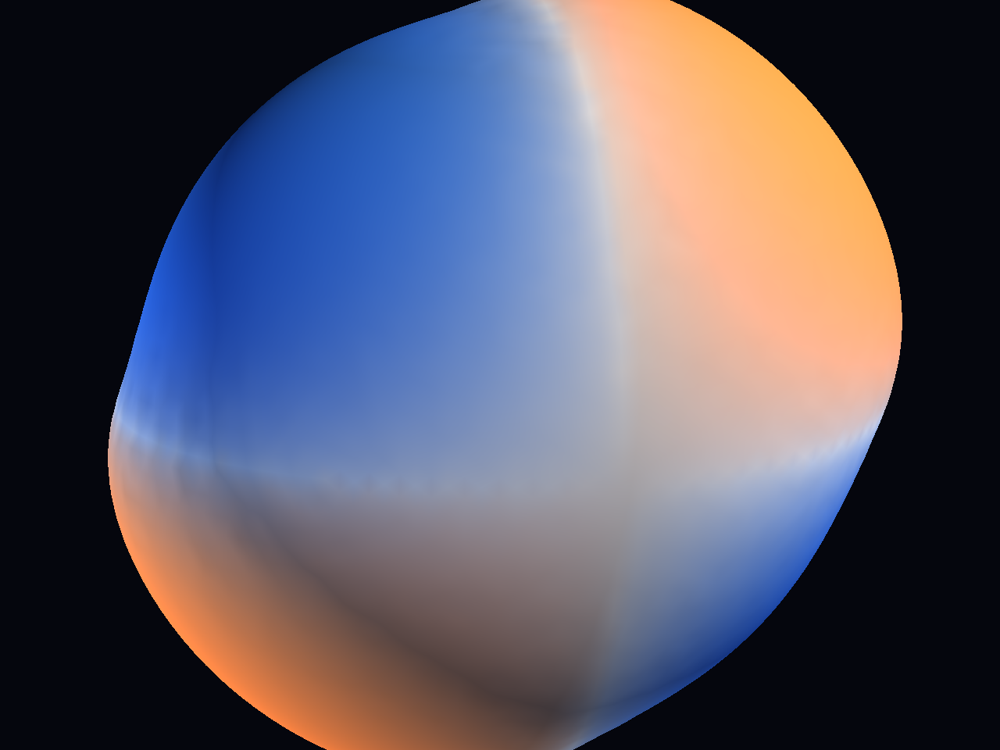
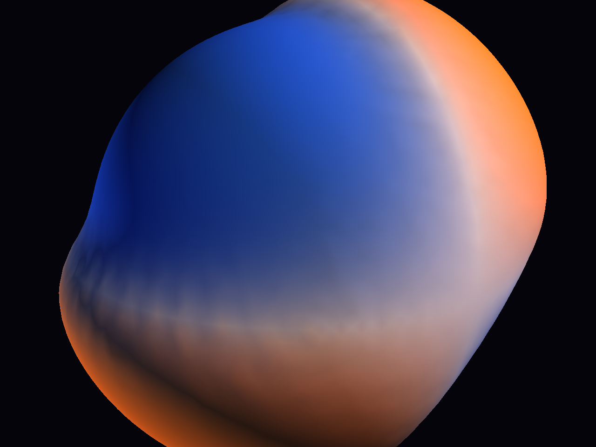
No triangulation, no pole singularities, no stencil rewrites per geometry. The network queries the manifold pointwise.
The learned solution is differentiable everywhere — evaluate at any point on the surface, at any time, without reinterpolation.
Swap the curvature term: torus, ellipsoid, Klein-bottle-on-the-weekend. The PDE loss adapts.
Not a foundation model. A tiny MLP that trains in under a minute and runs in real-time in a Taichi viewer.